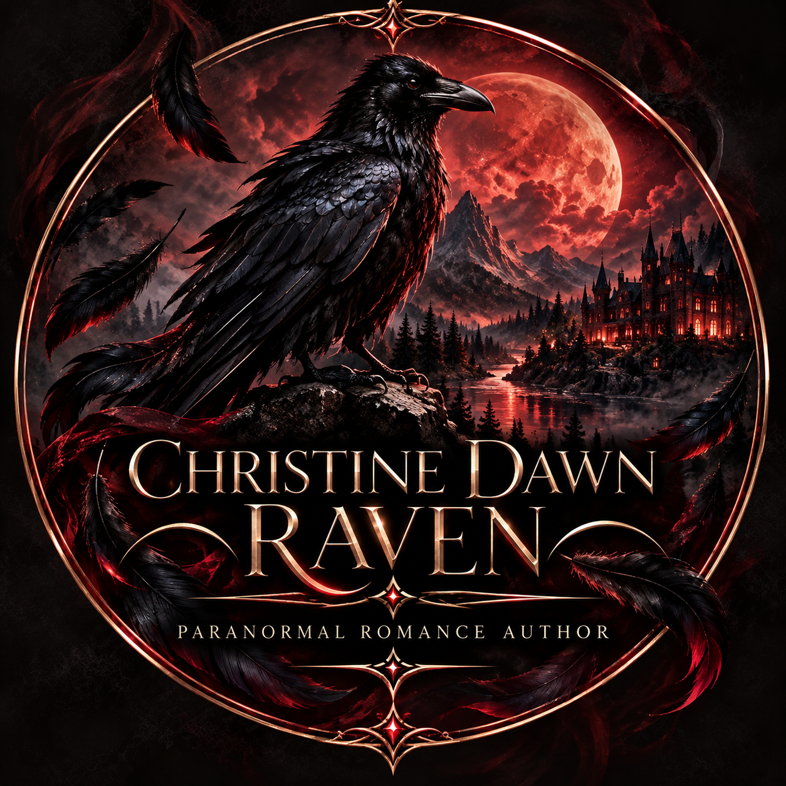
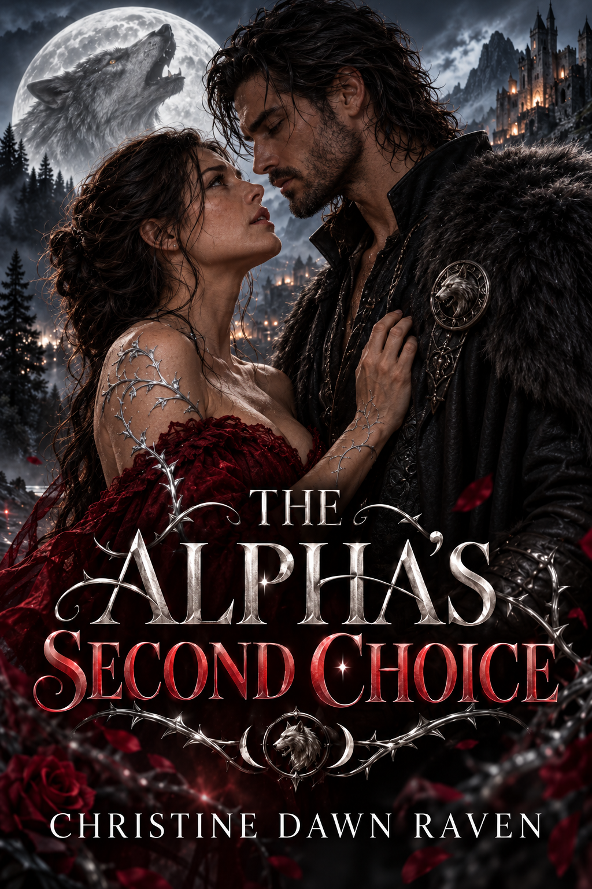
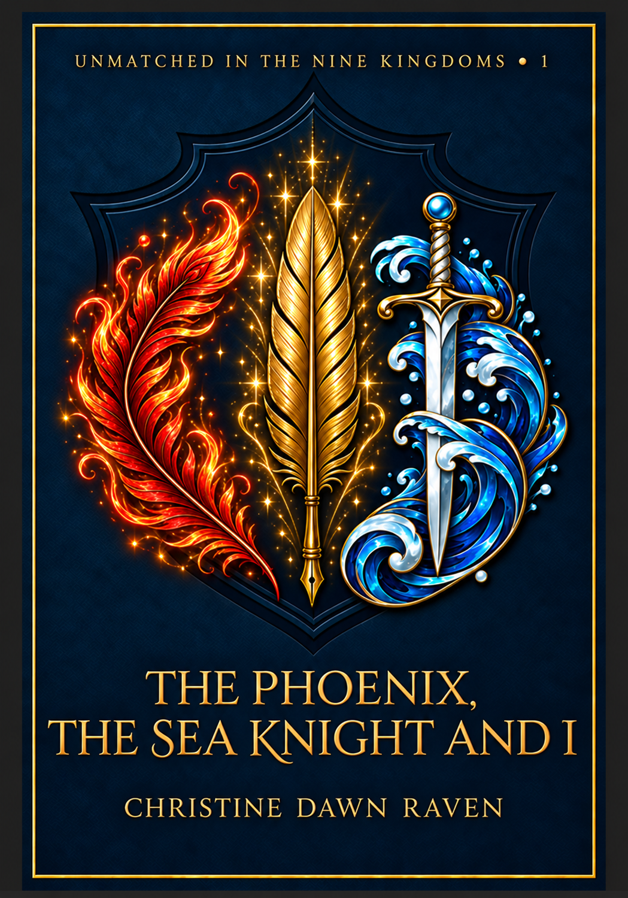
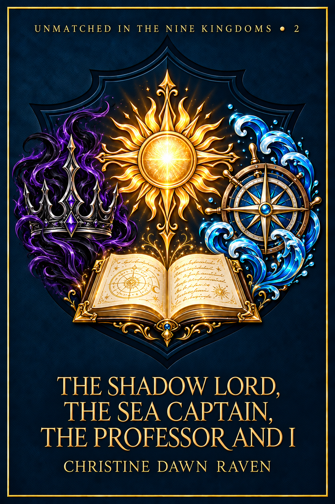

The Vampires’ Obsession
Watching Her Sleep
Ongoing MFM dark paranormal romance.

This website features dark paranormal romance intended for readers aged 18 and over.
Watching Her Sleep
Ongoing MFM dark paranormal romance.

An ongoing paranormal romance
Read on Inkitt
Five years ago, Miren gave her heart to the last Phoenix Lord Aurik Vael. He never noticed.
The kingdom’s sacred Concordance has already declared another woman his perfect match, and the royal council expects him to accept the politically advantageous bond.
Miren refuses to spend another moment waiting for a man who realised her worth too late.
Then Prince Tavian Nerethi arrives.
The dangerously attentive Sea Knight sees more than Aurik’s quiet researcher and keeper of inconvenient truths. He sees the brilliant woman beneath the ink-stained fingers, and he has no intention of stepping aside simply because a Phoenix Lord has finally learned how to burn for her.
Caught between fire and sea, Miren uncovers a flaw within the Concordance that could shatter everything the Nine Kingdoms believe about magical compatibility. Aurik wants a second chance. Tavian offers her an entirely different future. Tradition insists that she must choose one of them.
Miren has spent too long allowing other people to decide her fate.
This time, she will write her own ending. And there may be room in it for both men.
The Phoenix, the Sea Knight and I is a high-heat MFM fantasy romance novella featuring a thirty-four-year-old scholar heroine, an arrogant Phoenix Lord who falls too late and far too hard, a devoted Sea Knight, royal intrigue, jealousy, magical matchmaking and a why-choose HEA. This is not a love triangle. Miren chooses them both.

Kael Veyr has always been Celeste’s enemy. Kidnapping her should not be the moment she discovers how badly he wants her.
At thirty-six, Celeste has survived a forged magical engagement, her father’s public arrest and a machine that nearly tore open the sky through her body. As the Institute of Resonant Magic’s first patron and the heir to a dangerous form of Sun magic, she has learned never to surrender control.
Then assassins come for her.
Kael, the arrogant Shadow Lord who has challenged her at every turn, abducts Celeste before they can reach her. He claims he is protecting her, but captivity places her at the mercy of the one man she should despise. Worse, the chains meant to restrain her awaken desires she has spent years refusing to examine.
Marek Solenne, Celeste’s lifelong best friend and a captain of the Sea Guard, comes to rescue her. Instead, he is captured too, forcing Celeste to confront the devotion he has hidden for years.
Their only hope is Leander Sorell, Celeste’s brilliant younger former professor and the forbidden man she tried very hard not to want. When he discovers her disappearance, he follows a trail leading to a conspiracy determined to use Celeste as the key to controlling the inherited magic of the Nine Kingdoms.
One enemy who falls first. One best friend who has always loved her. One former professor who waited until she was truly free to choose him.
Tradition expects Celeste to select one man.
Celeste has never been particularly obedient.
The Shadow Lord, the Sea Captain, the Professor and I is a high-heat why-choose fantasy romance novella featuring a thirty-six-year-old Sun Mage, enemies-to-lovers, best-friends-to-lovers, forbidden former-professor attraction, kidnapping, captivity, daring rescues, consensual chains and a polyamorous HEA. This is not a love triangle. Celeste chooses all three.